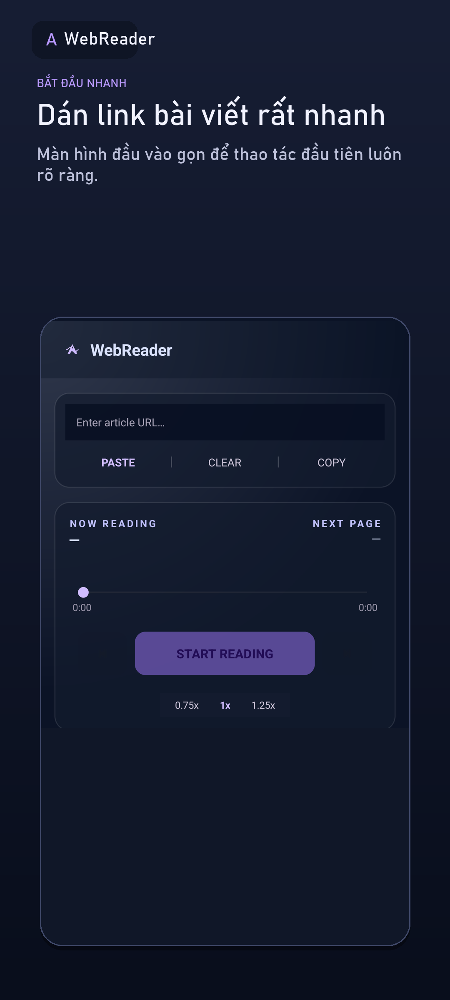
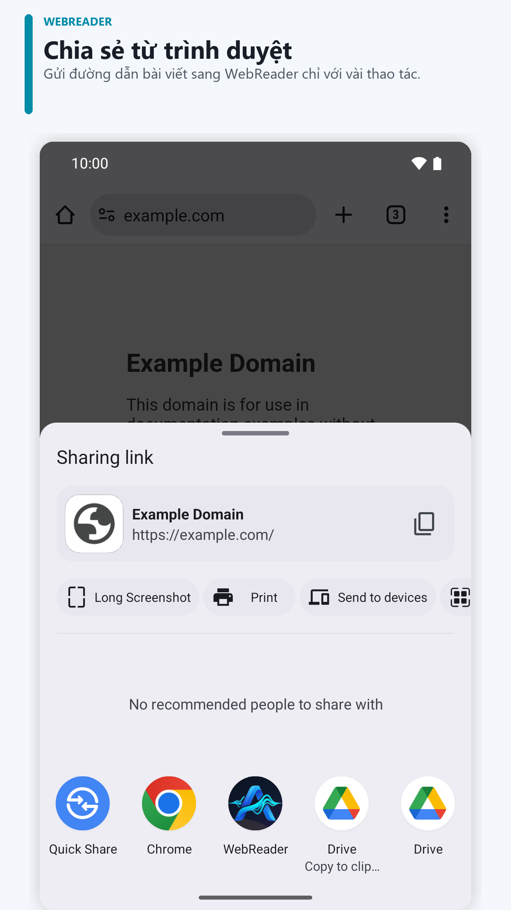
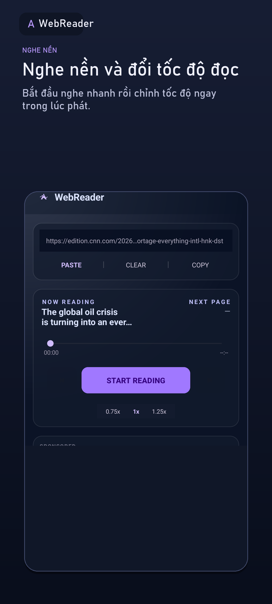

Chia sẻ đường dẫn
Gửi bài viết từ trình duyệt hoặc dán URL vào WebReader.
NGHE WEB THEO CÁCH CỦA BẠN
Chia sẻ một đường dẫn vào WebReader. Ứng dụng trích phần nội dung chính và đọc thành tiếng — để bạn nghe khi đi lại, làm việc khác hoặc khóa màn hình.
Tải miễn phí trên Google Play
TỪ LINK ĐẾN ÂM THANH
Gửi bài viết từ trình duyệt hoặc dán URL vào WebReader.
WebReader trích nội dung bài để trải nghiệm nghe gọn hơn.
Nghe khi chuyển ứng dụng, với điều khiển phát trong thông báo.
XEM WEBREADER HOẠT ĐỘNG
Chia sẻ một trang web, chọn tốc độ nghe rồi mở lại nội dung gần đây.
Khả năng trích nội dung tùy website; trang cần đăng nhập hoặc chặn truy cập có thể không hoạt động đầy đủ.
Tải WebReader trên Google Play
BẮT ĐẦU TRONG VÀI BƯỚC
Khả năng trích nội dung tùy website; trang cần đăng nhập hoặc chặn truy cập có thể không hoạt động đầy đủ.
Xem hướng dẫn nghe trang web trên Android →
ĐIỀU CHỈNH THEO THÓI QUEN
ĐỌC THEO LỊCH CỦA BẠN
WebReader là app đọc trang web thành tiếng (web reader) trên Android, dùng text to speech (chuyển văn bản thành giọng nói) để bạn nghe bài báo, blog hoặc truyện bằng giọng có trên thiết bị. Chia sẻ link từ trình duyệt rồi tiếp tục nghe khi đi lại, làm việc nhà hoặc muốn nghỉ mắt. Khả năng trích nội dung khác nhau tùy website.
CHỌN CÁCH NGHE PHÙ HỢP
Chrome trên Android có tính năng “Nghe trang này” trên các trang được hỗ trợ. Nếu bạn chỉ cần nghe nhanh một trang ngay trong trình duyệt, hãy thử tính năng đó trước. WebReader phù hợp khi bạn muốn chia sẻ link từ ứng dụng khác, gom lịch sử nghe và tiếp tục bài đã mở; khả năng trích nội dung tùy website.
CÂU HỎI THƯỜNG GẶP
Có thể tải ứng dụng miễn phí. Ứng dụng có quảng cáo và một số tính năng mua trong ứng dụng; Google Play hiển thị giá và thông tin trước khi mua.
Cần internet để tải nội dung từ đường dẫn web. Giọng đọc có thể cần mạng hoặc hoạt động ngoại tuyến tùy vào giọng và bộ máy TTS trên thiết bị.
Không phải lúc nào cũng vậy. Trang yêu cầu đăng nhập, chặn truy cập hoặc tải nội dung theo cách đặc biệt có thể không trích được đầy đủ.
Có giao diện tiếng Việt và tiếng Anh. Giọng đọc phụ thuộc vào các giọng TTS được cài đặt và hỗ trợ trên thiết bị Android.
Lịch sử và tiến độ đọc được lưu trên thiết bị. Google Ads và Firebase có thể xử lý một số dữ liệu thiết bị, hoạt động ứng dụng và chẩn đoán. Đọc Chính sách quyền riêng tư để biết chi tiết.
WEBREADER CHO ANDROID